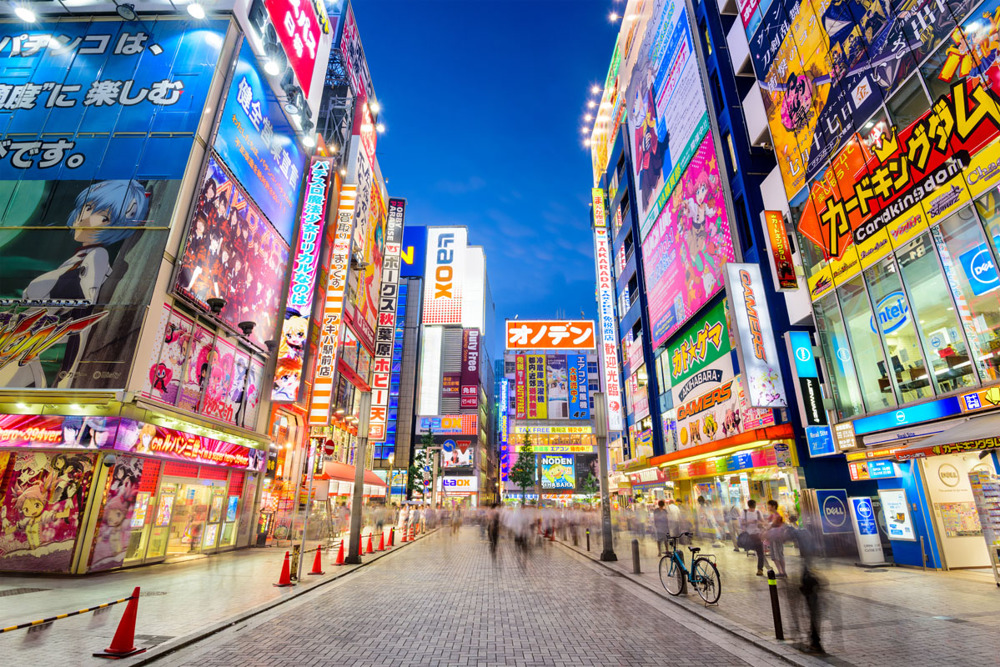
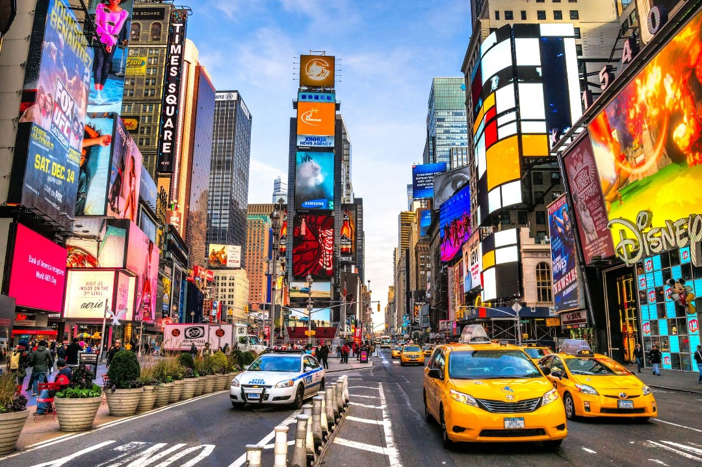
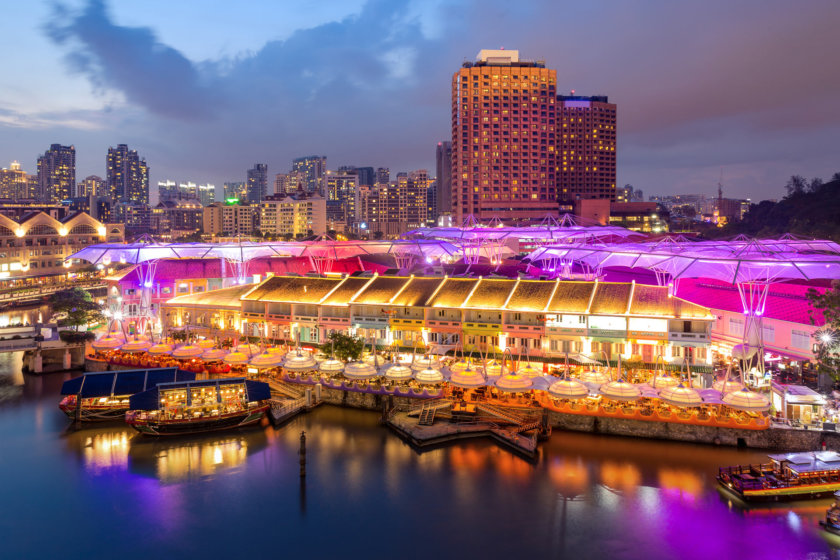

TOKYO
Tokyo est une métropole dynamique et captivante, mêlant harmonieusement tradition et modernité. Voici quelques-unes de ses plus belles villes : Shibuya : C'est l'un des quartiers les plus animés de Tokyo, réputé pour son célèbre carrefour où des milliers de personnes traversent chaque jour. Shibuya est également connu pour ses boutiques branchées, ses restaurants, ses bars et sa vie nocturne animée. Shinjuku : Un centre névralgique de Tokyo, Shinjuku est connu pour ses gratte-ciels imposants, ses grands magasins, ses bars à thème, ses restaurants de luxe et son quartier rouge, Kabukicho. Le parc de Shinjuku Gyoen offre également une évasion paisible au milieu de l'agitation urbaine...

NEW YORK
New York, surnommée la "Ville qui ne dort jamais", regorge de quartiers emblématiques qui reflètent sa diversité culturelle et son dynamisme. Voici quelques-uns des plus beaux quartiers de New York : Manhattan : Le cœur de la ville, Manhattan est célèbre pour ses gratte-ciels emblématiques tels que l'Empire State Building, le Rockefeller Center et Times Square. Central Park offre une oasis de verdure au milieu de l'agitation urbaine, tandis que la Cinquième Avenue est réputée pour ses boutiques de luxe. Brooklyn : Ce quartier a gagné en popularité ces dernières années pour son ambiance artistique et décontractée. Des quartiers comme Williamsburg abritent des galeries d'art.

SINGAPOUR
Singapour, surnommée la "Ville Jardin" en raison de sa végétation luxuriante et de ses espaces verts bien entretenus, regorge également de quartiers fascinants à explorer. Voici quelques-uns des plus beaux quartiers de Singapour : Marina Bay : Le quartier emblématique de Marina Bay est célèbre pour ses gratte-ciels spectaculaires, tels que le Marina Bay Sands avec sa piscine à débordement sur le toit offrant une vue panoramique sur la ville. Vous trouverez également le Gardens by the Bay, un jardin botanique futuriste avec ses Supertrees illuminés. Chinatown : Un quartier animé imprégné d'histoire et de culture, Chinatown offre une expérience immersive avec ses temples colorés...

MOSCOU
Richesse Historique et Culturelle : Moscou est une ville imprégnée d'histoire et de culture, avec des monuments emblématiques comme le Kremlin, la Cathédrale Saint-Basile et la Place Rouge. Chaque coin de rue offre un aperçu fascinant de l'héritage russe. Art et Théâtre de Renommée Mondiale : Des institutions prestigieuses comme le Théâtre Bolchoï et le Musée des Beaux-Arts Pouchkine font de Moscou un centre culturel incontournable. Des spectacles de ballet aux expositions d'art, la ville regorge d'événements culturels captivants. Gastronomie Russe Authentique : Découvrez la cuisine russe authentique à Moscou. Des plats traditionnels comme le bortsch et les pelménis aux mets délicats comme le caviar et les blinis.

MONTREAL
Montréal, la métropole cosmopolite du Québec, regorge de quartiers dynamiques et éclectiques qui reflètent son héritage multiculturel et son charme unique. Voici quelques-uns des plus beaux quartiers de Montréal : Vieux-Montréal : Ce quartier historique est célèbre pour ses rues pavées, ses bâtiments anciens et son architecture européenne. Vous y trouverez des sites emblématiques tels que la basilique Notre-Dame, la Place Jacques-Cartier et le Vieux-Port, où vous pourrez faire une balade en bateau ou déguster des plats locaux dans l'un des nombreux restaurants. Plateau Mont-Royal : Un quartier bohème et artistique, réputé pour ses ruelles colorées, ses cafés animés, ses boutiques vintage.